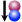

Einführungstutorial
Für Lehrer und Schüler (in 10 Schritten)9. Herunterladen fertiger Moleküle
Damit man größere Moleküle nicht jedes Mal von Hand selbst erstellen muss, gibt es in Ballview verschiedene Datenbankanbindungen von denen man fertige Moleküle herunterladen kann. Es stehen die folgenden drei Datenbanken zur Auswahl:
- PubChem (Chemiedatenbank, empfohlen)
 EDS (Electron Density Server)
EDS (Electron Density Server)-  RCDS PDB (Proteindatenbank)
Um ein fertiges Molekül zu laden, klickt man auf eines der obigen Symbole, zum Beispiel Pubchem. Daraufhin öffnet sich ein Fenster, in dem man unten im Feld neben dem Wort Pubchem den gewünschten Begriff (z.B. Aspirin) eingibt und anschließend auf den Button Pubchem klickt. Ballview startet nun die Suche und liefert eine ganze Liste von Vorschlägen, die das gewünschte Molekül enthalten. Mit der linken Maustaste klickt man das gesuchte Molekül an und lädt es mit dem Einfügen-Button in das Programm.